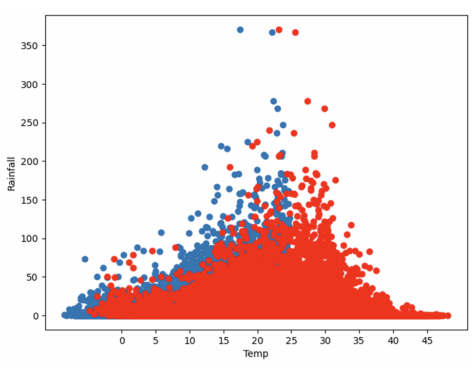
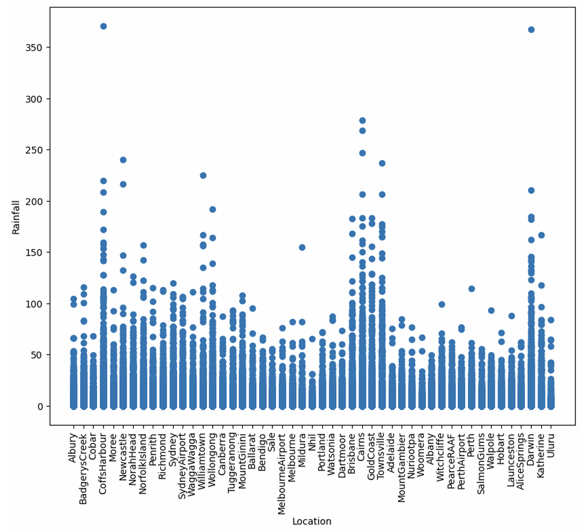
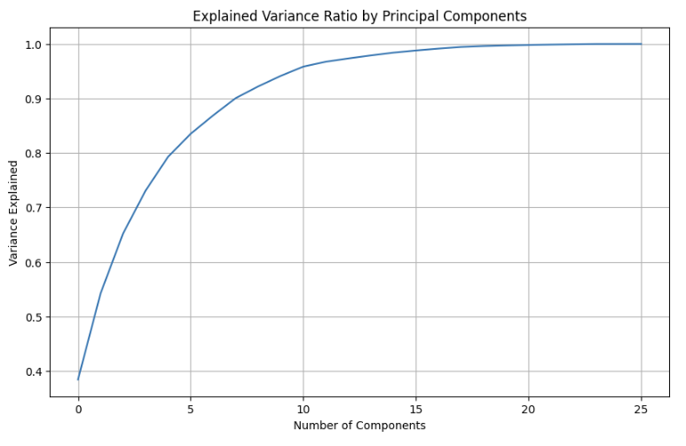
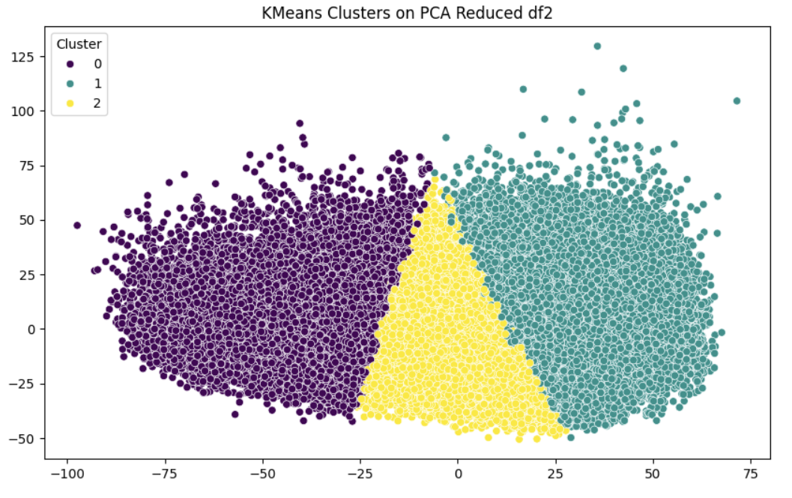
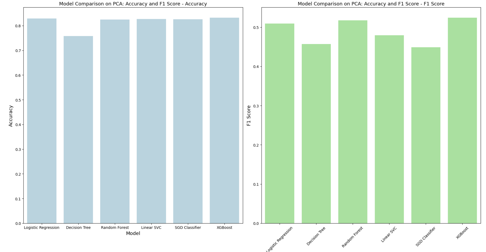
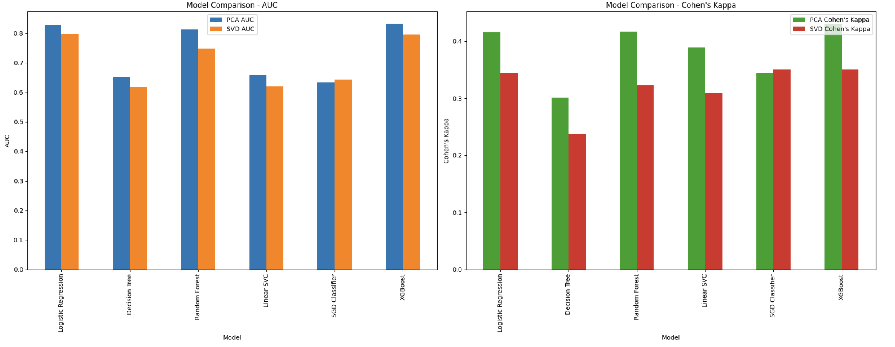

A report-driven study of Australian weather data using PCA, SVD, K-Means clustering, and predictive models to uncover climate structure and improve rainfall prediction.
The project reduces a high-dimensional climate dataset into interpretable structure, identifies distinct weather regimes, and compares predictive methods for rainfall-related outcomes.
Selected visuals from the final report showing exploratory analysis, dimensionality reduction, clustering, and model comparison.






The main polished write-up covering methodology, visuals, clustering, model comparison, and conclusions.
Open ReportThe consolidated code artifact preserved from the original project materials with minimal intervention.
Open Code PDFA presentation-ready summary of the project suitable for portfolio review and interview discussion.
Open Slides